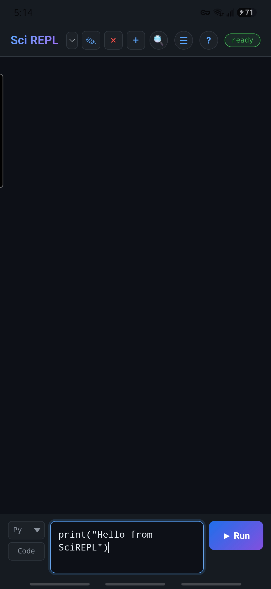
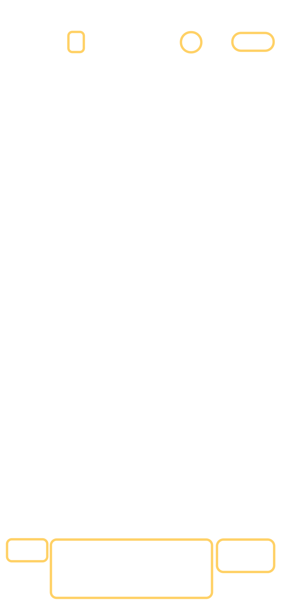
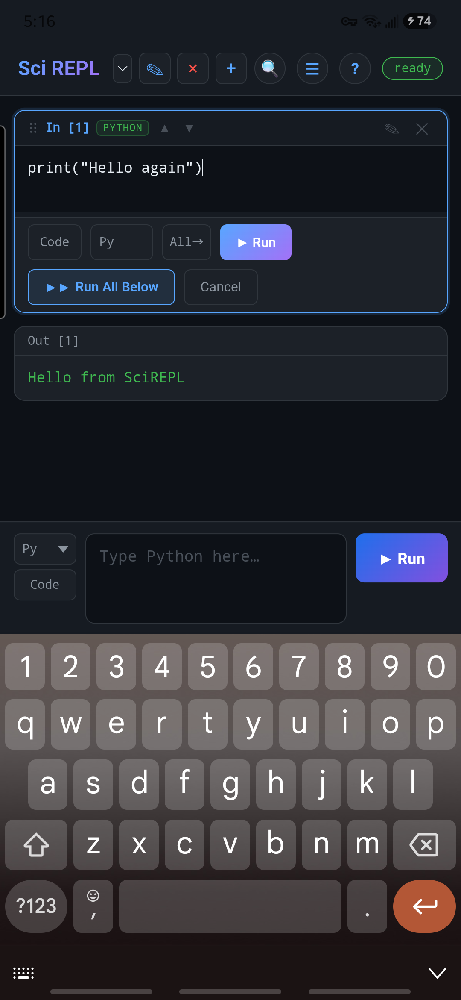
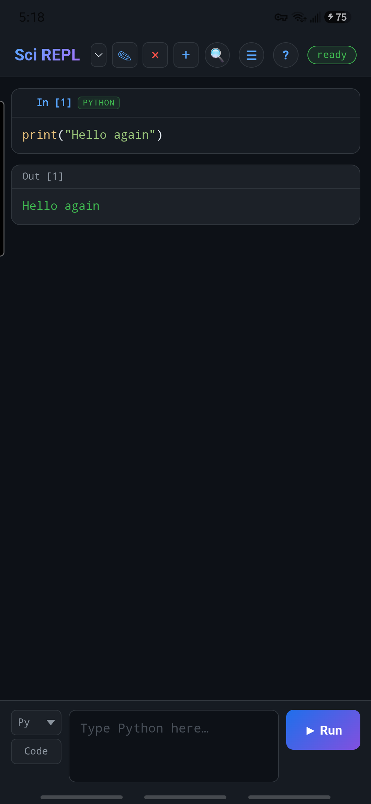
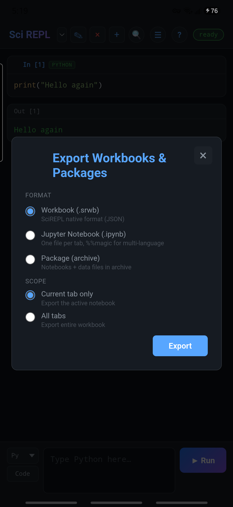
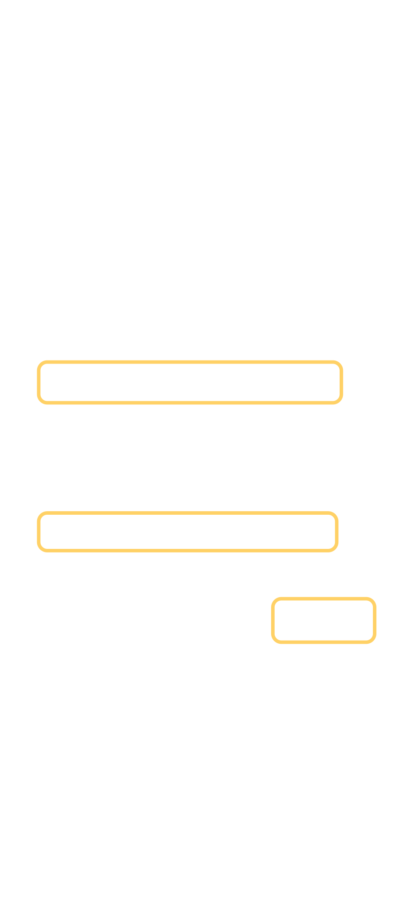

Belajar sambil praktik
Buat buku kerja pertama Anda
Ini adalah pendamping praktis yang lebih panjang untuk referensi antarmuka (Halaman referensi bahasa Inggris). Anda akan menjalankan satu sel Python, mengubahnya, dan menyimpan salinan yang Anda kendalikan. Tidak diperlukan akun AI atau kunci API.
Tangkapan layar menampilkan SciREPL Free v1.3.2 pada ponsel Samsung Galaxy seri S24. Pelajaran ini juga berlaku untuk Pro, meskipun beberapa kontrol di sana mungkin terlihat berbeda.
Langkah 1
Temukan tempat Anda di aplikasi
Baris teratas adalah header. Ini mencakup Menu, Bantuan, dan lencana status. Pemilih buku kerja menentukan buku kerja mana yang terbuka.


Di bawah baris header adalah buku kerja: sel yang tersimpan beserta hasilnya.
Lihat tangkapan layar ponsel selengkapnyaPanel sel baru adalah tempat Anda mengetik sel berikutnya. Tombol tajuk opsional dapat menghilang saat layar sempit; tindakannya tetap tersedia dari Menu atau Bantuan jika berlaku.
Langkah 2
Tulis dan jalankan sel Python
Tunggu hingga lencana status bertuliskan siap sebelum penjalanan pertama.
- Di panel sel baru, pilih Python dari pemilih bahasa. Pada ponsel yang sempit, pemilih yang tertutup mungkin hanya menampilkan Py.
- Ketik program pendek ini:
print("Hello from SciREPL") - Ketuk Jalankan. Sel yang tersimpan akan muncul di buku kerja. Di bawahnya, Anda akan melihat
Hello from SciREPL.
Penjalanan pertama mungkin memerlukan waktu lebih lama. Runtime Python harus dimulai satu kali. Tunggu hingga status kembali ke siap; sel Python berikutnya biasanya menggunakan kembali runtime tersebut.
Langkah 3
Edit sel yang tersimpan
- Ketuk pensil ✎ di tajuk sel yang tersimpan itu sendiri, di kanan atas tepat di sebelah kiri ✕. Ini akan membuka sel tersebut untuk diedit; mengetik di panel sel baru akan membuat sel lain.
- Ubah
Hello from SciREPLmenjadiHello again. - Pilih Jalankan untuk menyimpan dan menjalankan perubahan. Anda sekarang akan melihat
Hello againdi bawah sel tersebut.


Hello again.Jika Anda tidak sengaja membuka editor, gunakan Batal untuk menutupnya tanpa menjalankan. Pemilih bahasa di dalam sel tersimpan akan mengubah sel tersebut; pemilih sel baru tidak.
Langkah 4
Ekspor salinan buku kerja
- Buka Menu → Ekspor buku kerja & paket.
- Pilih Hanya tab saat ini atau Semua tab, lalu format SciREPL Buku kerja (.srwb) saat Anda ingin mempertahankan status khusus SciREPL.
- Ketuk Ekspor dan pilih tujuan yang Anda kendalikan.



Mengapa mengekspor? SciREPL memulihkan sesi lokal, tetapi penyimpanan lokal bukan cadangan dan tidak dibagikan secara otomatis antara aplikasi Android dan browser. Lihat berkas dan ekspor (Halaman referensi bahasa Inggris) untuk format lain, termasuk .ipynb dan PDF.
Langkah 5
Hal yang dapat dicoba berikutnya
Coba 2 + 2 di sel Python lain. Lalu gunakan pemilih buku kerja untuk beralih tab. Panduan buku kerja CSV dimulai dari Menu → Jelajahi paket, bundel & buku kerja, memasang contoh, dan menunjukkan cara sel-selnya bekerja dengan berkas lokal.
Panduan Markov Groups menunjukkan cara mencari katalog yang lebih luas, membuka buku kerja yang ada tentang gerakan kubus, menjalankan sel-selnya secara berurutan, dan mengubah satu parameter.
Untuk pengingat cepat tentang letak kontrol, kembali ke referensi antarmuka (Halaman referensi bahasa Inggris). Untuk mempelajari bahasa lain atau menambahkan paket, lanjutkan dengan Bahasa & paket (Halaman referensi bahasa Inggris).